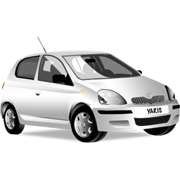

Thierry Emery
- : thierry28.emery@gmail.com
- : 51, rue du Général de Gaulle
- 62156 Haucourt
- : Permis B.
-  : Véhicule Personnel.
- : 06.63.22.65.28
- : 09.83.52.98.03
À propos de moi
Passionné et autodidacte dans le domaine informatique, je suis motivé pour faire de ma passion mon métier. J'apprends seul les langages html, css et java-script en m'aidant des cours de Mr Pierre Giraud et de site tel que ceux de la 3W Academy, Codecademy, Openclassrooms etc...
Mes atouts
- Transmettre des connaissances.
- Rédiger des documents ou rapports.
- Mettreen oeuvre des procédures et règles.
- Utiliser les outils bureautiques.
- Installer des points d'accès internet.
Centres d'inérêts
- Bricolage.
- Pêche.
- Lecture.
- Natation.
Compétences
- Accueillir, conseiller et former des clients.
- Rédiger des devis.
- Assembler des ordinateurs.
- Diagnostiquer des disfonctionements.
- Configurer des postes informatiques.
Expériences Professionnelles
- 2016 - 2018 : Agent de numérisation MDPH62 à Arras.
- 2011 : Electricien d'équipement (Stage) Ets Pannequin à Biache-Saint-Vaast.
- 2010 : Employé de libre service (Stage) Ecomarché à Vis-En-Artois.
- 2008 - 2009 : Technicien de mainteance informatique (Stage) A.M.I Pro à Arras
- 2008 : Technicien de maintenance informatique (Stage) ATOM PC Raillencourt-Saint-Olle.
- 2007 : Magasinier Les restaurants du coeur à Beaurains
- 2007 : Magasinier-Vendeur Gamm vert à Baralles.
- 2003 : Magasinier-Vendeur Feut vert à Arras.
- 2003 : Magasinier-Vendeur (Stage) Génélec à Arras.
- 2001 : Agent d'Espace Vert AISM à Ecourt-Saint-Quentin.
- 1999 : Agent d'Entretien A.P.E.I à Monchy-le-preux.
Formations
- Décembre 2020 à Août 2021 : Développeur Web Openclassrooms.
- Octobre 2019 à Décembre 2019 : Action de préqualification informatique, numérique, réseaux et communications AFP2I à Arras.
- Avril 2017 à Septembre 2017 : PCIE AFP2I à Arras.
- Mai 2011 à Janvier 2012 : BEP/CAP Electricité d"équipement AFPA à Liévin.
- Mars 2008 à Février 2009 : Technicien de maintenance informatique AFPA à Arras.
- Septembre 1996 à Juin 1998 : BEP/CAP Distribution MagasinageLycée proofessionnel à Bapaume.